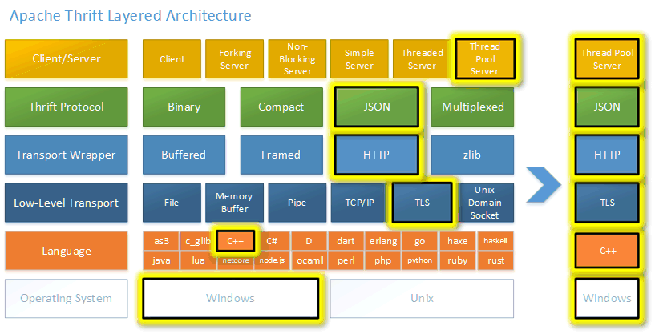

Apache Thrift is something like gRPC BUT
- it can use binary protocol/JSON protocol, and more
- It has another IDL (Interface Definition Language)
- It doesn't use HTTP/2 as its transport protocol, but it can be adapted to use it
How does it look like ?¶
Well, first of all here is Thrift Architecture for some nerds
 In order to start working you need to define
- interfaces
- data structures
- Whole process may be find here
// ProductService.thrift
namespace java com.example
namespace py example
struct Product {
1: i32 id,
2: string name,
3: double price,
// ... other fields ...
}
service ProductService {
Product getProductByID(1: i32 productID),
list<Product> searchProducts(1: string query),
bool updateProductStock(1: i32 productID, 2: i32 quantity),
// ... other methods ...
}
After that you can generate Server (example in Java)
try {
TServerTransport serverTransport = new TServerSocket(9090);
TServer server = new TSimpleServer(new Args(serverTransport).processor(processor));
// Use this for a multithreaded server
// TServer server = new TThreadPoolServer(new TThreadPoolServer.Args(serverTransport).processor(processor));
System.out.println("Starting the simple server...");
server.serve();
} catch (Exception e) {
e.printStackTrace();
}
And also handlers
public class CalculatorHandler implements Calculator.Iface {
private HashMap<Integer,SharedStruct> log;
public CalculatorHandler() {
log = new HashMap<Integer, SharedStruct>();
}
public void ping() {
System.out.println("ping()");
}
public int add(int n1, int n2) {
System.out.println("add(" + n1 + "," + n2 + ")");
return n1 + n2;
}
public int calculate(int logid, Work work) throws InvalidOperation {
System.out.println("calculate(" + logid + ", {" + work.op + "," + work.num1 + "," + work.num2 + "})");
int val = 0;
switch (work.op) {
case ADD:
val = work.num1 + work.num2;
break;
case SUBTRACT:
val = work.num1 - work.num2;
break;
case MULTIPLY:
val = work.num1 * work.num2;
break;
case DIVIDE:
if (work.num2 == 0) {
InvalidOperation io = new InvalidOperation();
io.whatOp = work.op.getValue();
io.why = "Cannot divide by 0";
throw io;
}
val = work.num1 / work.num2;
break;
default:
InvalidOperation io = new InvalidOperation();
io.whatOp = work.op.getValue();
io.why = "Unknown operation";
throw io;
}
SharedStruct entry = new SharedStruct();
entry.key = logid;
entry.value = Integer.toString(val);
log.put(logid, entry);
return val;
}
public SharedStruct getStruct(int key) {
System.out.println("getStruct(" + key + ")");
return log.get(key);
}
public void zip() {
System.out.println("zip()");
}
}